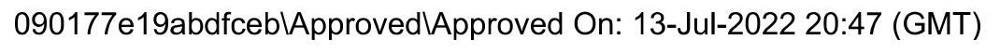
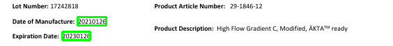

Start with the file itself. Open the supplier file, sample-sdf-document.pdf, and look through all 3 pages.
Identify at least six important fields you believe should be extracted from this document. A field is one piece of information with a name, such as the vendor's name or a date. The vendor is the company that sells the product: here, the supplier.
Write your list down before you go to the next slide. The form at the end of this task asks for the date fields you found.
Here's a sample answer, with where each field sits in the supplier file. How many of these did you pick?
In Step 2, your code pulls out the vendor's name, the letter date, every Date of Manufacture and Expiration Date, and the table on page 3.
You'll work in the copy of the notebook you saved in the reading "Learn How to Extract Text and Bounding Boxes with PyMuPDF". Open Google Drive and look in the Colab Notebooks folder for Copy of Reading a Supporting Documentation File with PyMuPDF (Pfizer 3.0 P3). Double-click it to open it in Colab.
Didn't save a copy? Open the notebook here, then click File → Save a copy in Drive and work in the copy that opens.
Colab forgets your files and variables when it disconnects, so run the setup again. Press Run (the round play button on the left of each cell) on every cell under the notebook's Step 1 and Step 2, in order. When the upload box appears, click Choose Files and pick sample-sdf-document.pdf.
The file is open when the first line under the Step 2 cell says:
{{OUT:Output:Total Pages: 3}}Every cell on the next slides goes in a new code cell at the bottom of the notebook. To add one, click the last cell, then click + Code at the top.
Start with the vendor information from the document's header, the top part of a page where a company prints its name and address. The first piece of text on page 1 is the vendor's name. Add a new code cell, paste this in, and press Run:
{{CODE:python:first_word = doc[0].get_text("words")[0] print(f"Vendor Name, {first_word[4]}, page 1")}}You already know get_text("words") gives one row per word, with its box. [0] takes the first row, and first_word[4] is the fifth value in it: the word itself.
Each line you print has the same 3 parts: the label, the value, and the page it's on.
Now the date fields. You'll write one regex pattern for each kind of date and keep them in a dictionary, with the label as the key. Add a new code cell, paste this in, and press Run:
{{CODE:python:import re patterns = { "Letter Date": r"(\d{1,2}\s+[A-Z][a-z]+,\s*\d{4})", "Date of Manufacture": r"Date of Manufacture:\s*(\d{8})", "Expiration Date": r"Expiration Date:\s*(\d{8})", }}},\s* so it matches with or without a space after the comma.\s* matches any spaces or line breaks. Page 2 puts two spaces after the colon, and page 3 puts the date on the next line of the text.This cell prints nothing. The next one uses it.
Search every page with every pattern. Add a new code cell, paste this in, and press Run:
{{CODE:python:found = [] for page_num in range(len(doc)): text = doc[page_num].get_text("text") for label, pattern in patterns.items(): match = re.search(pattern, text) if match: date = match.group(1) found.append((label, date, page_num + 1)) print(f"{label}, {date}, page {page_num + 1}")}}The loop reads each page's text, as in the notebook's Step 4. re.search looks for one pattern in it. If it finds a match, match.group(1) keeps the part in round brackets. Each date is printed and saved in the list found, with its label and page, for the optional steps later.
Code can be wrong without an error, so check every line it printed against the file. Open the supplier file next to your notebook and find each date on its page, beside its label.
You'll also see two dates your code didn't print: the "Approved On" stamps, printed sideways on the left edge of pages 1 and 2. Here's the one on page 1, turned so you can read it:

The stamps are drawn as shapes, like a picture of letters, not stored as text. get_text() only reads text, so no pattern can find them. That's why your code prints 5 dates when the file shows 7. Your notebook is right.
Next, the table data. Page 3 has a table of test results. Add a new code cell, paste this in, and press Run:
{{CODE:python:tables = doc[2].find_tables() print(f"Tables found: {len(tables.tables)}") for row in tables.tables[0].extract(): print(row)}}doc[2] is page 3, because Python counts pages from 0. find_tables() looks for tables on the page. tables.tables[0] is the first table it found, and extract() turns it into a list of rows. Each row is a list of its cells.
The first row holds the table's headings, and each row after it is one test with its method and result.
This step is optional. Add the bounding box of each date: the 4 numbers for its left, top, right and bottom on the page. Add a new code cell, paste this in, and press Run:
{{CODE:python:for label, date, page_number in found: box = doc[page_number - 1].search_for(date)[0] item = {"text": f"{label}: {date}", "bbox": [round(v) for v in box], "page": page_number} print(item)}}search_for finds where some text sits on a page and gives back its box. It works for a date made of several words too, like 3 June, 2022. round cuts each number to a whole number, so the boxes are easy to read.
Also optional: draw a green box around each date on page 2 with OpenCV, a library for working with pictures. Add a new code cell, paste this in, and press Run:
{{CODE:python:import cv2 import numpy as np from PIL import Image page_number = 2 page = doc[page_number - 1] # Convert PDF page to an image pix = page.get_pixmap() img = np.array(Image.frombytes( "RGB", [pix.width, pix.height], pix.samples)) # Convert image to OpenCV BGR format img = cv2.cvtColor(img, cv2.COLOR_RGB2BGR) # PyMuPDF and OpenCV both measure y from the top of the page, # so no conversion is needed. for label, date, date_page in found: if date_page == page_number: x0, y0, x1, y1 = map(int, page.search_for(date)[0]) cv2.rectangle(img, (x0, y0), (x1, y1), (0, 255, 0), 2) print(f"Found '{date}' at: ({x0}, {y0}, {x1}, {y1})") # Convert back to RGB for displaying in PIL img_rgb = cv2.cvtColor(img, cv2.COLOR_BGR2RGB) display(Image.fromarray(img_rgb))}}This is the notebook's own drawing cell, aimed at the dates you found. get_pixmap() turns the page into a picture. cv2.rectangle draws a box from the top-left corner to the bottom-right corner, in green, 2 pixels thick. Under the cell you'll see 2 lines, then page 2 as a picture:

Each green box sits right on its date, next to its label. These numbers differ by 1 from the last step's in places, because int drops the decimals and round rounds them.
Before you hand in your notebook, check that it shows these three things:
Then share it, so your Program Manager can open it:
You'll paste this link into the form at the end of this task. To check it works, open it in a private browser window: it should open without asking for access.
Once you've finished extracting, take a few minutes to step back and reflect.
You can share your thoughts in the last question of the form at the end of this task. It's optional.
That's it! You're building real-world skills now: field detection, table parsing and debugging. This is exactly what AI-powered document tools do behind the scenes.